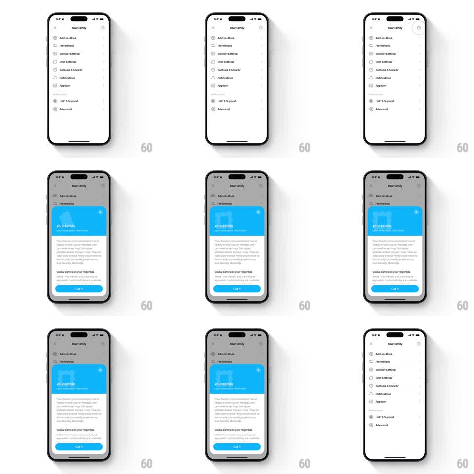

Media
Frame-by-frame

Rebuild this animation 1:1: Family's onboarding sheet intro - from the light "Your Family" settings list, a blue-branded bottom sheet slides up while the Family logo spins and scales into place with a springy settle, above the title, explainer copy, and a blue "Got It" pill.

Rebuild this animation 1:1: Family's onboarding sheet intro - from the light "Your Family" settings list, a blue-branded bottom sheet slides up while the Family logo spins and scales into place with a springy settle, above the title, explainer copy, and a blue "Got It" pill.
## Integration
Integration: stack-agnostic spec - springs given as stiffness/damping, timed motions as duration + curve; map every value to your framework and animation library of choice.
## Scene
Light settings list "Your Family": rows for Address Book, Preferences, Browser Settings, Chat Settings, Backups & Security, Notifications, App Icon, Help & Support, Advanced. The sheet: blue header block carrying the white Family logo, "Your Family" title, "Learn more about Your Family" subhead, two explainer paragraphs ("Your Family is the centralized hub..." and "Global control at your fingertips"), X close, and a blue "Got It" pill.
## Motion spec
Pattern: sheet entrance with spinning logo settle.
- Trigger: the settings list dims (scrim 40%) as the sheet slides up (spring ~300/20, 350ms).
- The logo starts rotated -120deg at scale 0.5 and spins upright while growing (rotation to 0deg, scale to 1, 500ms, ease-out), then overshoots (scale 1.08, rotation +6deg) and settles (spring ~300/14, 300ms) - a playful double-beat.
- Title and subhead fade in under the logo (200ms, delayed 250ms); paragraphs stagger up (60ms apart, translateY 8pt -> 0).
- The blue "Got It" pill rises last (spring ~320/18, 250ms).
- Tap Got It or X: the logo spins back 90deg while shrinking (200ms) and the sheet slides down (250ms).
## Calibration
- The logo is the only moving part during the first 250ms - the spin owns the entrance.
- Blue is reserved for the header block and the pill.
## Reduced motion
Logo fades in upright (200ms); sheet slides without spring.
## Don't miss
- The sheet's header is a full-bleed blue block, not a floating icon.
- The settings list stays legible behind the scrim.